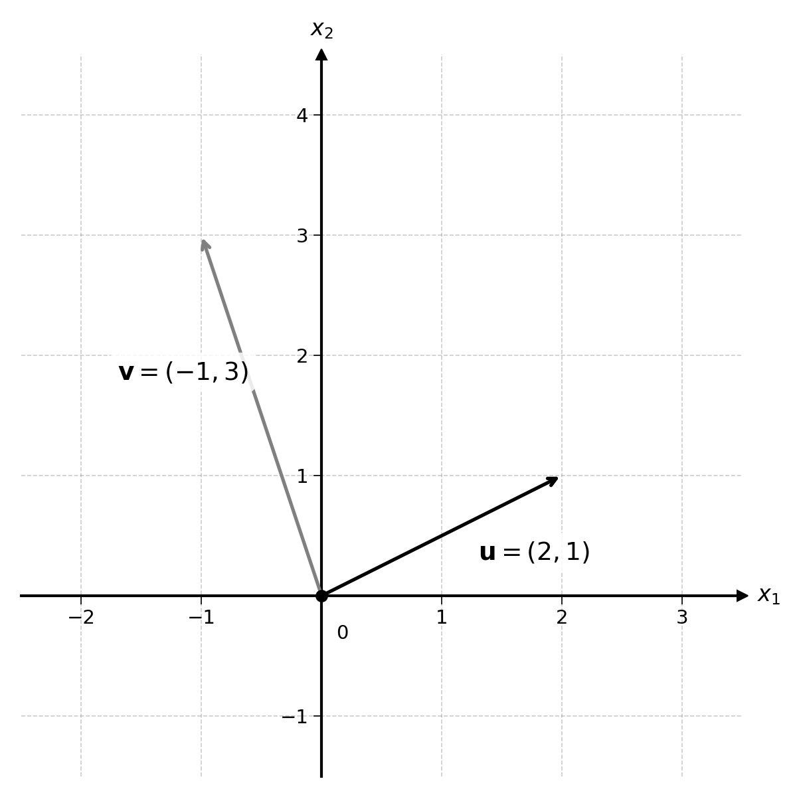
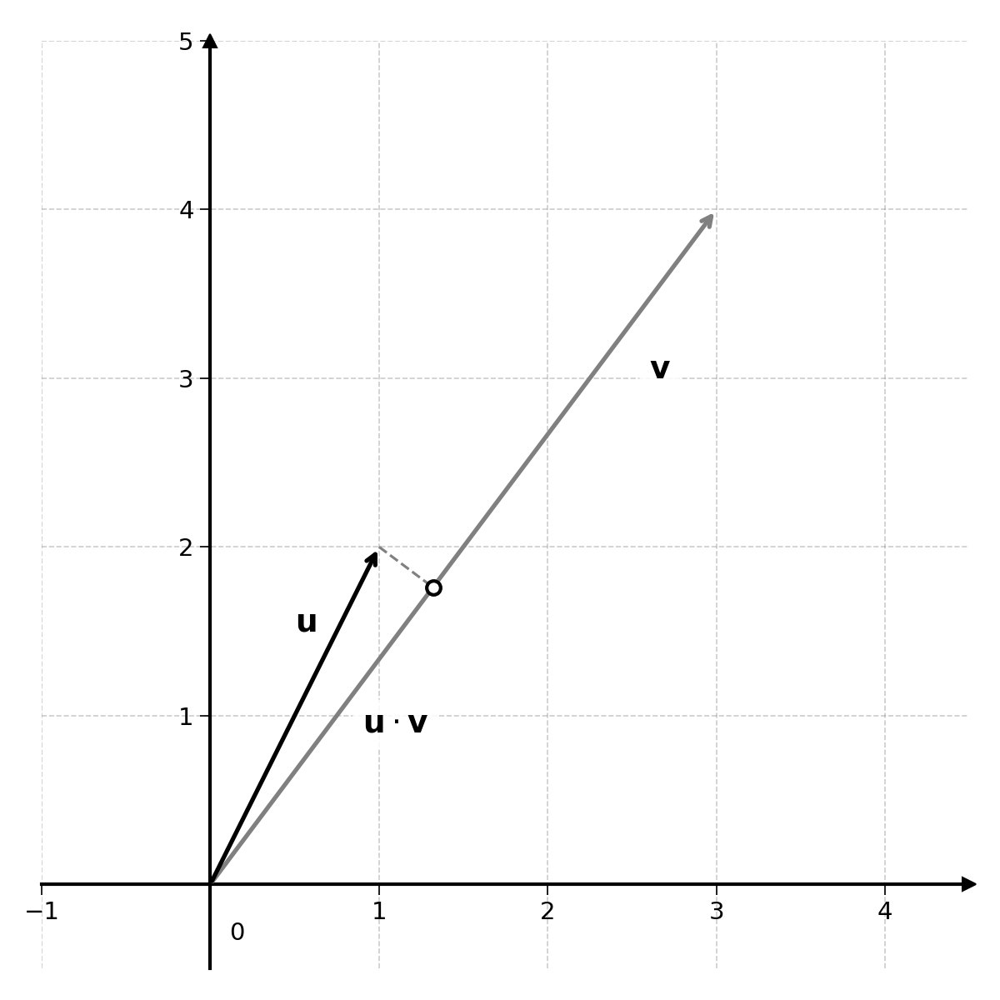
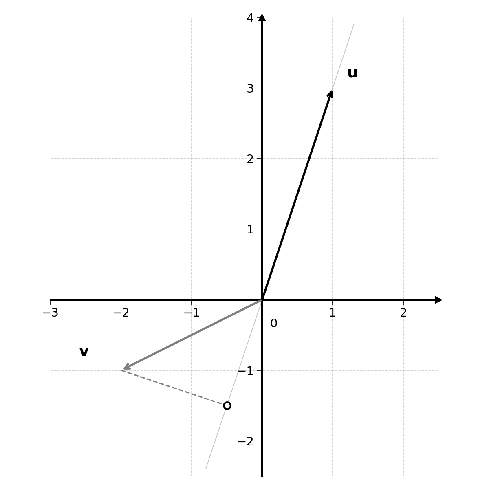
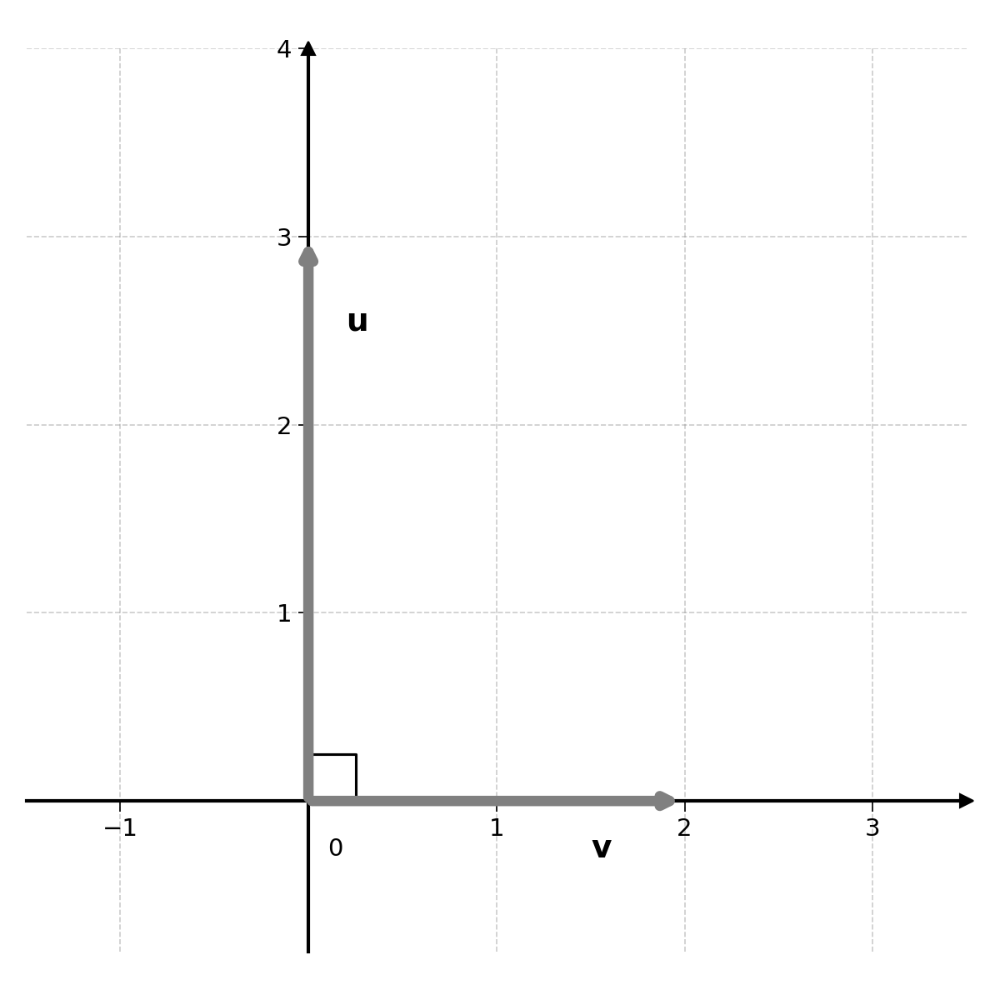

18 Linear Algebra Continued
We already introduced vectors in the previous chapter. These vectors are ordered lists of numbers. They define both a direction and a magnitude.

A matrix is a grid of numbers. It has both rows and columns:
\[ \mathbf{A} = \begin{pmatrix} 1 & 4 & 7 \\ 2 & 5 & 8 \\ 3 & 6 & 9 \end{pmatrix} \]
Matrices are generally noted as bolded capital letters (e.g., \(\mathbf{A}\) or \(\mathbf{X}\)). By convention, we use letters at the end of the alphabet to represent variables (numbers that change) and letters at the beginning of the alphabet to represent constants.
The dimensions of a matrix are noted as:
\[ \text{Number of rows} \times \text{Number of columns} \]
By convention, the number of rows is always the first of these numbers. For example, the matrix \(\mathbf{A}\) has dimensions \(3 \times 3\): three rows and three columns.
Exercise 18.1 What are the dimensions of the following matrices?
\[ \mathbf{B} = \begin{pmatrix} 1 & 2 \\ 3 & 4 \\ 5 & 6 \end{pmatrix} \quad \quad \mathbf{C} = \begin{pmatrix} 7 & 8 & 9 & 10 \\ 11 & 12 & 13 & 14 \end{pmatrix} \quad \quad \mathbf{D} = \begin{pmatrix} 3 \\ 7 \\ 2 \\ 5 \end{pmatrix} \]
What do you notice about matrix D?
Matrices look a lot like a data table, like the ones that have been shown earlier in this book. Matrices and vectors are very convenient ways to handle large collections of numbers. By the end of this chapter, you will have learnt how to represent a linear regression with linear algebra. It is as simple as:
\[ \hat{\mathbf{y}} = \mathbf{X}\mathbf{w} \]
Let’s see how we can get there.
18.1 Matrix Addition
Matrix addition works exactly like vector addition. You can add two matrices of the same dimensions by adding their corresponding components:
\[ \begin{pmatrix} 1 & 2 \\ 3 & 4 \end{pmatrix} + \begin{pmatrix} 5 & 6 \\ 7 & 8 \end{pmatrix} = \begin{pmatrix} 1 + 5 & 2 + 6 \\ 3 + 7 & 4 + 8 \end{pmatrix} = \begin{pmatrix} 6 & 8 \\ 10 & 12 \end{pmatrix} \]
In line with vector addition, to add two matrices, they must have the same dimensions.
18.2 Scalar Multiplication
Scalar multiplication, or multiplication by a single number, works like vectors. To multiply a matrix by a single number, simply multiply all components of that matrix by the chosen number. For example:
\[ 2 \times \begin{pmatrix} 1 & 2 \\ 3 & 4 \end{pmatrix} = \begin{pmatrix} 2 \times 1 & 2 \times 2 \\ 2 \times 3 & 2 \times 4 \end{pmatrix} = \begin{pmatrix} 2 & 4 \\ 6 & 8 \end{pmatrix} \]
Using scalar multiplication and matrix addition, we can also define matrix subtraction:
\[ \mathbf{A} - \mathbf{B} = \mathbf{A} + (-1) \times \mathbf{B} \]
For example:
\[\begin{aligned} \begin{pmatrix} 5 & 6 \\ 7 & 8 \end{pmatrix} - \begin{pmatrix} 1 & 2 \\ 3 & 4 \end{pmatrix} &= \begin{pmatrix} 5 & 6 \\ 7 & 8 \end{pmatrix} + (-1) \times \begin{pmatrix} 1 & 2 \\ 3 & 4 \end{pmatrix} \\ &= \begin{pmatrix} 5 & 6 \\ 7 & 8 \end{pmatrix} + \begin{pmatrix} -1 & -2 \\ -3 & -4 \end{pmatrix} = \begin{pmatrix} 4 & 4 \\ 4 & 4 \end{pmatrix} \end{aligned}\]
18.3 Vector Dot Product
In the previous chapter, we covered vector addition. Another important vector operation is the dot product. The dot product of two vectors, noted \(\mathbf{u} \cdot \mathbf{v}\), is the mathematical equivalent of a multiplication for scalar numbers.
It is computed by multiplying the components of two vectors and summing all of them. Let’s make this more concrete with an example:
\[ \mathbf{u} = (1, 2) \quad \text{and} \quad \mathbf{v} = (3, 4) \]
\[ \mathbf{u} \cdot \mathbf{v} = 1 \times 3 + 2 \times 4 = 3 + 8 = 11 \]
More generally, the dot product of two vectors \(\mathbf{u}\) and \(\mathbf{v}\) with \(n\) components can be defined as:
\[ \mathbf{u} \cdot \mathbf{v} = u_1 v_1 + u_2 v_2 + \cdots + u_n v_n = \sum_{i=1}^{n} u_i v_i \]
Exercise 18.2 Compute the dot product of the following pairs of vectors:
- \(\mathbf{a} = (2, 3)\) and \(\mathbf{b} = (4, 1)\)
- \(\mathbf{c} = (1, 0, 3)\) and \(\mathbf{d} = (2, 5, 2)\)
- \(\mathbf{e} = (-1, 4)\) and \(\mathbf{f} = (3, 2)\)
Some interesting facts about the dot product. First, the order of operation does not matter:
\[ \mathbf{u} \cdot \mathbf{v} = \mathbf{v} \cdot \mathbf{u} \]
For example:
\[ \mathbf{u} \cdot \mathbf{v} = 1 \times 3 + 2 \times 4 = 11 \]
\[ \mathbf{v} \cdot \mathbf{u} = 3 \times 1 + 4 \times 2 = 11 \]
18.3.1 Geometric Interpretation
The dot product can be visualised as the projection of one vector over another, or the degree to which they point in the same direction.

Two vectors that point in a similar direction will have a high positive dot product (see the example with \(\mathbf{u}\) and \(\mathbf{v}\) above).
Two vectors that point away from each other (at an angle greater than 90°) will have a negative dot product. For example:
\[ \mathbf{u} = (1, 3) \quad \text{and} \quad \mathbf{v} = (-2, -1) \]

\[ \mathbf{u} \cdot \mathbf{v} = 1 \times (-2) + 3 \times (-1) = -2 - 3 = -5 \]
Notice how the projection of \(\mathbf{v}\) onto the line of \(\mathbf{u}\) falls behind the \(\mathbf{u}\) vector. This is a visual representation of the negative dot product.
What will be the dot product of the following two vectors?

\[ \mathbf{u} = (0, 3) \quad \text{and} \quad \mathbf{v} = (2, 0) \]
The projection of \(\mathbf{v}\) onto \(\mathbf{u}\) (or of \(\mathbf{u}\) onto \(\mathbf{v}\)) is \(0\). This can be verified by calculating their dot product:
\[ \mathbf{u} \cdot \mathbf{v} = 0 \times 2 + 3 \times 0 = 0 \]
Perpendicular vectors are called “orthogonal”. They have a dot product of \(0\).
18.4 Matrix Multiplication
Things get more interesting when it comes to multiplying matrices. Let’s start by visualising it with an example:
\[ \begin{pmatrix} 1 & 2 \\ 3 & 4 \end{pmatrix} \times \begin{pmatrix} 5 & 6 \\ 7 & 8 \end{pmatrix} \]
The way I was taught matrix multiplication is by putting one matrix on the left, the other matrix on top, and computing the dot product of each row of the left matrix with each column of the top matrix:
\[ \begin{array}{c|cc} & 5 & 6 \\ & 7 & 8 \\ \hline 1 \quad 2 & \; 1 \times 5 + 2 \times 7 & \; 1 \times 6 + 2 \times 8 \\ 3 \quad 4 & \; 3 \times 5 + 4 \times 7 & \; 3 \times 6 + 4 \times 8 \end{array} \]
Each cell in the result is the dot product of the corresponding row from the left and column from the top. Computing the values:
\[ \begin{pmatrix} 1 & 2 \\ 3 & 4 \end{pmatrix} \times \begin{pmatrix} 5 & 6 \\ 7 & 8 \end{pmatrix} = \begin{pmatrix} 1 \times 5 + 2 \times 7 & 1 \times 6 + 2 \times 8 \\ 3 \times 5 + 4 \times 7 & 3 \times 6 + 4 \times 8 \end{pmatrix} = \begin{pmatrix} 19 & 22 \\ 43 & 50 \end{pmatrix} \]
Matrix multiplication comes with practice. After understanding the basic mechanics of it, you can write a multiplication more directly.
Exercise 18.3 Compute the following matrix multiplications:
\(\begin{pmatrix} 2 & 1 \\ 0 & 3 \end{pmatrix} \times \begin{pmatrix} 1 & 4 \\ 2 & 5 \end{pmatrix}\)
\(\begin{pmatrix} 1 & 0 \\ 0 & 1 \end{pmatrix} \times \begin{pmatrix} 7 & 8 \\ 9 & 10 \end{pmatrix}\)
What do you notice about the second multiplication?
18.4.1 Compatible Dimensions
For multiplication to work, the matrices need to be of compatible dimensions. To multiply two matrices \(\mathbf{A}\) and \(\mathbf{B}\), the number of columns of \(\mathbf{A}\) must equal the number of rows of \(\mathbf{B}\).
Let’s make this concrete with two matrices \(\mathbf{X}\) and \(\mathbf{Y}\):
\[ \mathbf{X} = \begin{pmatrix} 1 & 2 & 3 \\ 4 & 5 & 6 \end{pmatrix} \quad \text{and} \quad \mathbf{Y} = \begin{pmatrix} 7 & 8 \\ 9 & 10 \\ 11 & 12 \end{pmatrix} \]
\(\mathbf{X}\) has dimensions \(2 \times 3\), it has \(3\) columns. \(\mathbf{Y}\) has dimensions \(3 \times 2\), it has \(3\) rows. As the number of columns of \(\mathbf{X}\) matches the number of rows of \(\mathbf{Y}\), we can multiply them:
\[\begin{aligned} \mathbf{X}\mathbf{Y} &= \begin{pmatrix} 1 & 2 & 3 \\ 4 & 5 & 6 \end{pmatrix} \begin{pmatrix} 7 & 8 \\ 9 & 10 \\ 11 & 12 \end{pmatrix} \\ &= \begin{pmatrix} 1 \times 7 + 2 \times 9 + 3 \times 11 & 1 \times 8 + 2 \times 10 + 3 \times 12 \\ 4 \times 7 + 5 \times 9 + 6 \times 11 & 4 \times 8 + 5 \times 10 + 6 \times 12 \end{pmatrix} \\ &= \begin{pmatrix} 58 & 64 \\ 139 & 154 \end{pmatrix} \end{aligned} \]
Notice that the resulting matrix has \(2\) rows, the number of rows of \(\mathbf{X}\), and \(2\) columns, the number of columns of \(\mathbf{Y}\). More generally, multiplying a matrix of dimensions \(m \times n\) by a matrix of dimensions \(n \times p\) gives a matrix of dimensions \(m \times p\).
You may recognise a link between matrix multiplication and vector dot products. The multiplication of two matrices \(\mathbf{A}\) and \(\mathbf{B}\) can also be thought of as the dot products of the rows of \(\mathbf{A}\) with the columns of \(\mathbf{B}\). And you can only compute the dot product of two vectors if they have the same number of components.
Exercise 18.4 For each pair of matrices below, determine whether they can be multiplied, and if so, in which order. Compute the result when possible.
\(\mathbf{A} = \begin{pmatrix} 1 & 2 & 3 \\ 0 & 1 & 4 \end{pmatrix}\) and \(\mathbf{B} = \begin{pmatrix} 2 \\ 1 \\ 0 \end{pmatrix}\)
\(\mathbf{C} = \begin{pmatrix} 1 & 0 \\ 2 & 1 \end{pmatrix}\) and \(\mathbf{D} = \begin{pmatrix} 3 & 1 \\ 0 & 2 \\ 1 & 1 \end{pmatrix}\)
You may notice that we can multiply \(\mathbf{A}\) and \(\mathbf{B}\), but not \(\mathbf{B}\) and \(\mathbf{A}\).
18.4.2 Order Matters
With matrix multiplication, we get into an aspect of linear algebra that is sometimes confusing:
\[ \mathbf{A} \times \mathbf{B} \neq \mathbf{B} \times \mathbf{A} \]
This may be counter-intuitive, as so far we have been able to manipulate vectors and matrices like regular scalar numbers.
If you try to multiply \(\mathbf{A} = \begin{pmatrix} 1 & 2 \\ 3 & 4 \end{pmatrix}\) and \(\mathbf{B} = \begin{pmatrix} 5 & 6 \\ 7 & 8 \end{pmatrix}\), you will not get the same result as when you multiply \(\mathbf{B}\) times \(\mathbf{A}\):
\[ \mathbf{A}\mathbf{B} = \begin{pmatrix} 19 & 22 \\ 43 & 50 \end{pmatrix} \quad \text{but} \quad \mathbf{B}\mathbf{A} = \begin{pmatrix} 23 & 34 \\ 31 & 46 \end{pmatrix} \]
For this reason, the multiplication of two matrices is not a commutative operation. This is a fancy word to say that \(\mathbf{A}\mathbf{B} \neq \mathbf{B}\mathbf{A}\). Nothing more.
18.5 Identity
Multiplying any scalar number (like \(2.34\)) by \(1\) will give the original scalar number. More generally:
\[ 1 \times x = x \]
\(1\) is the identity element. This is very convenient for factorisation. For example:
\[ x + 2x^2 = x(1 + 2x) \]
Without \(1\) as the identity element, I would not have been able to simplify this expression as easily.
Factorisation is the process of breaking down a mathematical object or formula into simpler terms. Taking the following expression as example:
\[ 12x + 3y \]
Both \(12\) and \(3\) are multiples of \(3\); \(12\) can be rewritten as \(3 \times 4\) and \(3\) as \(3 \times 1\) (using the identity). Doing so, we get:
\[ 3 \times 4 \times x + 3 \times 1 \times y = 3(4x + y) \]
Factoring out the number \(3\).
The same can be done with matrices. To do so, we need to define an identity matrix \(\mathbf{I}\) such that for any matrix \(\mathbf{A}\), we get:
\[ \mathbf{A}\mathbf{I} = \mathbf{I}\mathbf{A} = \mathbf{A} \]
Using this identity matrix \(\mathbf{I}\), we could factorise the following expression:
\[ 2\mathbf{A}\mathbf{B} + \mathbf{B} = (2\mathbf{A} + \mathbf{I})\mathbf{B} \]
Notice that we factorise B to the right of the expression, as order matters for matrices.
But what would \(\mathbf{I}\) be? One hint: \(\mathbf{I}\) cannot be \(\begin{pmatrix} 1 & 1 \\ 1 & 1 \end{pmatrix}\) as:
\[ \begin{pmatrix} 1 & 2 \\ 3 & 4 \end{pmatrix} \times \begin{pmatrix} 1 & 1 \\ 1 & 1 \end{pmatrix} = \begin{pmatrix} 3 & 3 \\ 7 & 7 \end{pmatrix} \neq \begin{pmatrix} 1 & 2 \\ 3 & 4 \end{pmatrix} \]
What would the identity matrix \(\mathbf{I}\) have to look like? Try thinking about it before reading on.
The identity matrix is defined as:
\[ \mathbf{I}_2 = \begin{pmatrix} 1 & 0 \\ 0 & 1 \end{pmatrix} \]
It is a square matrix filled with \(0\)s and its diagonal is filled with \(1\)s. The identity matrix is generally noted with a subscript that represents its number of rows and columns. As the identity is always a square matrix, the number of rows and columns is the same. Sometimes, the subscript is omitted. In this case, simply assume that the identity matrix has the dimensions required for the operation to work.
The identity matrix can be shown in action by multiplying it with the matrix \(\mathbf{A} = \begin{pmatrix} 1 & 2 \\ 3 & 4 \end{pmatrix}\):
\[ \mathbf{A}\mathbf{I} = \begin{pmatrix} 1 & 2 \\ 3 & 4 \end{pmatrix} \times \begin{pmatrix} 1 & 0 \\ 0 & 1 \end{pmatrix} = \begin{pmatrix} 1 \times 1 + 2 \times 0 & 1 \times 0 + 2 \times 1 \\ 3 \times 1 + 4 \times 0 & 3 \times 0 + 4 \times 1 \end{pmatrix} = \begin{pmatrix} 1 & 2 \\ 3 & 4 \end{pmatrix} \]
\[ \mathbf{I}\mathbf{A} = \begin{pmatrix} 1 & 0 \\ 0 & 1 \end{pmatrix} \times \begin{pmatrix} 1 & 2 \\ 3 & 4 \end{pmatrix} = \begin{pmatrix} 1 \times 1 + 0 \times 3 & 1 \times 2 + 0 \times 4 \\ 0 \times 1 + 1 \times 3 & 0 \times 2 + 1 \times 4 \end{pmatrix} = \begin{pmatrix} 1 & 2 \\ 3 & 4 \end{pmatrix} \]
This is not a general proof, but will be enough for now.
18.6 Vector and Matrix Multiplication
Can we multiply a vector with a matrix? Yes, and this is very important to represent a linear regression as:
\[ \hat{\mathbf{y}} = \mathbf{X}\mathbf{w} \]
In which \(\mathbf{X}\) would be the input data matrix containing all the features, \(\mathbf{w}\) the vector of coefficients, and \(\hat{\mathbf{y}}\) the vector of predictions.
Let’s start by multiplying the matrix:
\[ \mathbf{A} = \begin{pmatrix} 1 & 2 \\ 3 & 4 \end{pmatrix} \]
And the vector:
\[ \mathbf{u} = \begin{pmatrix} 5 \\ 6 \end{pmatrix} \]
We get:
\[ \mathbf{A}\mathbf{u} = \begin{pmatrix} 1 & 2 \\ 3 & 4 \end{pmatrix} \begin{pmatrix} 5 \\ 6 \end{pmatrix} = \begin{pmatrix} 1 \times 5 + 2 \times 6 \\ 3 \times 5 + 4 \times 6 \end{pmatrix} = \begin{pmatrix} 17 \\ 39 \end{pmatrix} \]
This should look very similar to a matrix multiplication. In fact, it is the same principle.
Notice that in this case, the vector was represented as a single column, or a matrix with two rows and one column.
Exercise 18.5 Compute the following matrix-vector multiplications:
\(\begin{pmatrix} 2 & 0 \\ 1 & 3 \end{pmatrix} \begin{pmatrix} 4 \\ 1 \end{pmatrix}\)
\(\begin{pmatrix} 1 & 0 & 2 \\ 0 & 3 & 1 \end{pmatrix} \begin{pmatrix} 1 \\ 2 \\ 3 \end{pmatrix}\)
\(\begin{pmatrix} 1 & 0 \\ 0 & 1 \end{pmatrix} \begin{pmatrix} 7 \\ 3 \end{pmatrix}\)
What do you notice about the third multiplication?
When we were dealing with vectors alone, the distinction between a row and a column did not matter, as vectors are simple ordered lists of numbers.
When we start combining vectors and matrices, dimensions come into play. In the rest of this book, vectors are represented as columns:
\[ \mathbf{u} = \begin{pmatrix} u_1 \\ u_2 \\ \vdots \\ u_n \end{pmatrix} \]
Taking this into account, vectors will generally be multiplied on the right of matrices. Once this is clear, you can multiply any matrix with any vector, as long as the dimensions match. Vectors are treated as matrices with dimensions:
\[ \text{number of components} \times 1 \]
as there is only a single column.
18.7 Linear Regression Break
Let’s get back to linear regression for a few paragraphs. Using the regression:
\[ \text{Predicted Ice Cream Sales} = 2 + 20 \times \text{Temperature} \]
The forecasted temperatures in the next three days are: \(20\), \(21\), and \(22\).
The forecasted sales for tomorrow would then be:
\[ \text{Predicted Sales}_{\text{day 1}} = 2 + 20 \times 20 = 402 \]
\[ \text{Predicted Sales}_{\text{day 2}} = 2 + 20 \times 21 = 422 \]
\[ \text{Predicted Sales}_{\text{day 3}} = 2 + 20 \times 22 = 442 \]
To compute predictions, we had to compute each one with a separate calculation.
To practice multiplication of matrices and vectors, compute the following:
Exercise 18.6 Compute the following multiplication:
\[ \begin{pmatrix} 1 & 20 \\ 1 & 21 \\ 1 & 22 \end{pmatrix} \begin{pmatrix} 2 \\ 20 \end{pmatrix} \]
What do you notice?
Keep the result in mind for the next chapters.
18.8 Matrix and Vector Transpose
This chapter on linear algebra could not end without a presentation of the transpose operator. As dimensions are critical when multiplying and adding matrices, they sometimes need to be changed.
The transpose of a matrix \(\mathbf{A}\), noted \(\mathbf{A}^T\), swaps its rows with its columns. This can be very abstract, but will become clearer with the following example:
\[ \mathbf{A} = \begin{pmatrix} 1 & 2 \\ 3 & 4 \end{pmatrix} \quad \Rightarrow \quad \mathbf{A}^T = \begin{pmatrix} 1 & 3 \\ 2 & 4 \end{pmatrix} \]
What you can notice is that the first row of \(\mathbf{A}\) \((1, 2)\) becomes the first column of \(\mathbf{A}^T\). The second row of \(\mathbf{A}\) \((3, 4)\) becomes the second column of \(\mathbf{A}^T\). The transpose operator does not change the dimensions of a square matrix. It does change the dimensions of rectangular matrices, such as the following:
\[ \mathbf{B} = \begin{pmatrix} 1 & 2 \\ 3 & 4 \\ 5 & 6 \end{pmatrix} \quad \Rightarrow \quad \mathbf{B}^T = \begin{pmatrix} 1 & 3 & 5 \\ 2 & 4 & 6 \end{pmatrix} \]
The matrix \(\mathbf{B}\) has dimensions \(3 \times 2\), the matrix \(\mathbf{B}^T\) has dimensions \(2 \times 3\). This should make intuitive sense, as the three rows of \(\mathbf{B}\) now become the three columns of \(\mathbf{B}^T\).
The transpose operator can also be applied to vectors, especially when considered as matrices of dimension \(n \times 1\). When transposed, they become \(1 \times n\). More visually, considering the vector:
\[ \mathbf{u} = \begin{pmatrix} 1 \\ 2 \\ 3 \end{pmatrix} \quad \Rightarrow \quad \mathbf{u}^T = \begin{pmatrix} 1 & 2 & 3 \end{pmatrix} \]
Using this notation, the dot product of two vectors of the same dimension:
\[ \mathbf{u} = \begin{pmatrix} 1 \\ 2 \\ 3 \end{pmatrix} \quad \text{and} \quad \mathbf{v} = \begin{pmatrix} 4 \\ 5 \\ 6 \end{pmatrix} \]
Can be represented as the following matrix multiplication:
\[ \mathbf{u} \cdot \mathbf{v} = \mathbf{u}^T \mathbf{v} = \begin{pmatrix} 1 & 2 & 3 \end{pmatrix} \begin{pmatrix} 4 \\ 5 \\ 6 \end{pmatrix} = 1 \times 4 + 2 \times 5 + 3 \times 6 = 32 \]
This notation will be used throughout the rest of the book.
18.9 Additional Rules of Transpose
There are some important rules to take into account with the transpose operator. This is important, as dimensions matter in linear algebra, and the transpose operator changes the dimensions of matrices.
18.9.1 Transpose of Transpose
The first is that the transpose of an already transposed matrix is the original matrix:
\[ (\mathbf{A}^T)^T = \mathbf{A} \]
This should make sense. If you flip a card twice, it will be back to its original position. Taking a simple matrix as an example:
\[ \mathbf{A} = \begin{pmatrix} 1 & 2 \\ 3 & 4 \end{pmatrix} \quad \Rightarrow \quad \mathbf{A}^T = \begin{pmatrix} 1 & 3 \\ 2 & 4 \end{pmatrix} \quad \Rightarrow \quad (\mathbf{A}^T)^T = \begin{pmatrix} 1 & 2 \\ 3 & 4 \end{pmatrix} = \mathbf{A} \]
18.9.2 Transpose of Sum
Another important rule is that the transposed sum of matrices is the same as the sum of transposed matrices:
\[ (\mathbf{A} + \mathbf{B})^T = \mathbf{A}^T + \mathbf{B}^T \]
Exercise 18.7 Verify that \((\mathbf{A} + \mathbf{B})^T = \mathbf{A}^T + \mathbf{B}^T\) with:
\[ \mathbf{A} = \begin{pmatrix} 1 & 2 \\ 3 & 4 \end{pmatrix} \quad \text{and} \quad \mathbf{B} = \begin{pmatrix} 5 & 6 \\ 7 & 8 \end{pmatrix} \]
18.9.3 Transpose of Product
When it comes to matrix multiplication, how would you evaluate the following?
\[ (\mathbf{A}\mathbf{B})^T \]
With:
\[ \mathbf{A} = \begin{pmatrix} 1 & 2 & 3 \\ 4 & 5 & 6 \end{pmatrix} \quad \text{and} \quad \mathbf{B} = \begin{pmatrix} 7 & 8 & 9 \\ 1 & 2 & 3 \\ 4 & 5 & 6 \end{pmatrix} \]
\(\mathbf{A}\) has dimensions \(2 \times 3\), \(\mathbf{B}\) has dimensions \(3 \times 3\). For this reason, we can calculate \(\mathbf{A}\mathbf{B}\).
Transposing \(\mathbf{A}\) and \(\mathbf{B}\), we are not able to multiply \(\mathbf{A}^T\) by \(\mathbf{B}^T\), as \(\mathbf{A}^T\) has dimensions \(3 \times 2\) and \(\mathbf{B}^T\) has dimensions \(3 \times 3\):
\[ \mathbf{A}^T = \begin{pmatrix} 1 & 4 \\ 2 & 5 \\ 3 & 6 \end{pmatrix} \quad \text{and} \quad \mathbf{B}^T = \begin{pmatrix} 7 & 1 & 4 \\ 8 & 2 & 5 \\ 9 & 3 & 6 \end{pmatrix} \]
To solve this problem:
\[ (\mathbf{A}\mathbf{B})^T = \mathbf{B}^T \mathbf{A}^T \]
Applying the transpose to a matrix multiplication also reverses the order.
Exercise 18.8 Verify that \((\mathbf{A}\mathbf{B})^T = \mathbf{B}^T \mathbf{A}^T\) with:
\[ \mathbf{A} = \begin{pmatrix} 1 & 2 & 3 \\ 4 & 5 & 6 \end{pmatrix} \quad \text{and} \quad \mathbf{B} = \begin{pmatrix} 7 & 8 & 9 \\ 1 & 2 & 3 \\ 4 & 5 & 6 \end{pmatrix} \]
Hint: First compute \(\mathbf{A}\mathbf{B}\) and transpose the result. Then compute \(\mathbf{B}^T \mathbf{A}^T\) and check that both are equal.
18.9.4 Multiplying a Matrix by Its Transpose
In linear algebra, the equivalent of squaring a number is multiplying a matrix by its transpose. This applies to both matrices and vectors:
\[ \mathbf{A}^T \mathbf{A} \quad \text{and} \quad \mathbf{v}^T \mathbf{v} \]
As shown earlier in this chapter, the notation \(\mathbf{v}^T \mathbf{v}\) is the matrix notation equivalent of the dot product.
18.10 Final Thoughts
We now have all the building blocks needed to work with matrices and vectors:
- Matrix addition: add corresponding components
- Scalar multiplication: multiply every component by a number
- Dot product: multiply components and sum them
- Matrix multiplication: dot products of rows and columns
- Identity matrix: the matrix equivalent of \(1\)
- Transpose: swap rows and columns
These operations will allow us to represent linear regressions with the expression \(\hat{\mathbf{y}} = \mathbf{X}\mathbf{w}\), which is the topic of the next chapter.
18.11 Solutions
Solution 18.1. Exercise 18.1
- \(\mathbf{B}\) has \(3\) rows and \(2\) columns, so its dimensions are \(3 \times 2\).
- \(\mathbf{C}\) has \(2\) rows and \(4\) columns, so its dimensions are \(2 \times 4\).
- \(\mathbf{D}\) has \(4\) rows and \(1\) column, so its dimensions are \(4 \times 1\). It is a column vector.
Solution 18.2. Exercise 18.2
\(\mathbf{a} \cdot \mathbf{b} = 2 \times 4 + 3 \times 1 = 8 + 3 = 11\)
\(\mathbf{c} \cdot \mathbf{d} = 1 \times 2 + 0 \times 5 + 3 \times 2 = 2 + 0 + 6 = 8\)
\(\mathbf{e} \cdot \mathbf{f} = (-1) \times 3 + 4 \times 2 = -3 + 8 = 5\)
Solution 18.3. Exercise 18.3
\[ \begin{pmatrix} 2 & 1 \\ 0 & 3 \end{pmatrix} \times \begin{pmatrix} 1 & 4 \\ 2 & 5 \end{pmatrix} = \begin{pmatrix} 2 \times 1 + 1 \times 2 & 2 \times 4 + 1 \times 5 \\ 0 \times 1 + 3 \times 2 & 0 \times 4 + 3 \times 5 \end{pmatrix} = \begin{pmatrix} 4 & 13 \\ 6 & 15 \end{pmatrix} \]
\[ \begin{pmatrix} 1 & 0 \\ 0 & 1 \end{pmatrix} \times \begin{pmatrix} 7 & 8 \\ 9 & 10 \end{pmatrix} = \begin{pmatrix} 7 & 8 \\ 9 & 10 \end{pmatrix} \]
The second multiplication uses the identity matrix \(\mathbf{I}_2\). Multiplying any matrix by the identity matrix returns the original matrix.
Solution 18.4. Exercise 18.4
- \(\mathbf{A}\) has dimensions \(2 \times 3\) and \(\mathbf{B}\) has dimensions \(3 \times 1\). The number of columns of \(\mathbf{A}\) (\(3\)) matches the number of rows of \(\mathbf{B}\) (\(3\)), so \(\mathbf{A}\mathbf{B}\) is possible:
\[ \mathbf{A}\mathbf{B} = \begin{pmatrix} 1 & 2 & 3 \\ 0 & 1 & 4 \end{pmatrix} \begin{pmatrix} 2 \\ 1 \\ 0 \end{pmatrix} = \begin{pmatrix} 1 \times 2 + 2 \times 1 + 3 \times 0 \\ 0 \times 2 + 1 \times 1 + 4 \times 0 \end{pmatrix} = \begin{pmatrix} 4 \\ 1 \end{pmatrix} \]
\(\mathbf{B}\mathbf{A}\) is not possible. The number of columns of \(\mathbf{B}\) (\(1\)) does not match the number of rows of \(\mathbf{A}\) (\(2\)).
- \(\mathbf{C}\) has dimensions \(2 \times 2\) and \(\mathbf{D}\) has dimensions \(3 \times 2\). \(\mathbf{C}\mathbf{D}\) is not possible. The number of columns of \(\mathbf{C}\) (\(2\)) does not match the number of rows of \(\mathbf{D}\) (\(3\)).
\(\mathbf{D}\mathbf{C}\) is possible, as the number of columns of \(\mathbf{D}\) (\(2\)) matches the number of rows of \(\mathbf{C}\) (\(2\)):
\[ \mathbf{D}\mathbf{C} = \begin{pmatrix} 3 & 1 \\ 0 & 2 \\ 1 & 1 \end{pmatrix} \begin{pmatrix} 1 & 0 \\ 2 & 1 \end{pmatrix} = \begin{pmatrix} 3 \times 1 + 1 \times 2 & 3 \times 0 + 1 \times 1 \\ 0 \times 1 + 2 \times 2 & 0 \times 0 + 2 \times 1 \\ 1 \times 1 + 1 \times 2 & 1 \times 0 + 1 \times 1 \end{pmatrix} = \begin{pmatrix} 5 & 1 \\ 4 & 2 \\ 3 & 1 \end{pmatrix} \]
This shows that the order in which matrices are multiplied matters, not just for the result, but for whether the multiplication is possible at all.
Solution 18.5. Exercise 18.5
\[ \begin{pmatrix} 2 & 0 \\ 1 & 3 \end{pmatrix} \begin{pmatrix} 4 \\ 1 \end{pmatrix} = \begin{pmatrix} 2 \times 4 + 0 \times 1 \\ 1 \times 4 + 3 \times 1 \end{pmatrix} = \begin{pmatrix} 8 \\ 7 \end{pmatrix} \]
\[ \begin{pmatrix} 1 & 0 & 2 \\ 0 & 3 & 1 \end{pmatrix} \begin{pmatrix} 1 \\ 2 \\ 3 \end{pmatrix} = \begin{pmatrix} 1 \times 1 + 0 \times 2 + 2 \times 3 \\ 0 \times 1 + 3 \times 2 + 1 \times 3 \end{pmatrix} = \begin{pmatrix} 7 \\ 9 \end{pmatrix} \]
\[ \begin{pmatrix} 1 & 0 \\ 0 & 1 \end{pmatrix} \begin{pmatrix} 7 \\ 3 \end{pmatrix} = \begin{pmatrix} 7 \\ 3 \end{pmatrix} \]
The identity matrix leaves the vector unchanged, just like multiplying a scalar by \(1\).
Solution 18.6. Exercise 18.6
\[ \begin{pmatrix} 1 & 20 \\ 1 & 21 \\ 1 & 22 \end{pmatrix} \begin{pmatrix} 2 \\ 20 \end{pmatrix} = \begin{pmatrix} 1 \times 2 + 20 \times 20 \\ 1 \times 2 + 21 \times 20 \\ 1 \times 2 + 22 \times 20 \end{pmatrix} = \begin{pmatrix} 402 \\ 422 \\ 442 \end{pmatrix} \]
The result of the multiplication is the same as the predictions for the next three days. The vector contains the coefficients of the linear regression (\(2\) for the intercept and \(20\) for the slope). The matrix contains a column of \(1\)s (for the intercept) followed by the temperatures of the next few days.
Solution 18.7. Exercise 18.7
First, compute \(\mathbf{A} + \mathbf{B}\):
\[ \mathbf{A} + \mathbf{B} = \begin{pmatrix} 1 + 5 & 2 + 6 \\ 3 + 7 & 4 + 8 \end{pmatrix} = \begin{pmatrix} 6 & 8 \\ 10 & 12 \end{pmatrix} \]
\[ (\mathbf{A} + \mathbf{B})^T = \begin{pmatrix} 6 & 10 \\ 8 & 12 \end{pmatrix} \]
Now, compute \(\mathbf{A}^T + \mathbf{B}^T\):
\[ \mathbf{A}^T + \mathbf{B}^T = \begin{pmatrix} 1 & 3 \\ 2 & 4 \end{pmatrix} + \begin{pmatrix} 5 & 7 \\ 6 & 8 \end{pmatrix} = \begin{pmatrix} 6 & 10 \\ 8 & 12 \end{pmatrix} \]
Both results are equal.
Solution 18.8. Exercise 18.8
First, compute \(\mathbf{A}\mathbf{B}\):
\[\begin{aligned} &\begin{pmatrix} 1 \times 7 + 2 \times 1 + 3 \times 4 & 1 \times 8 + 2 \times 2 + 3 \times 5 & 1 \times 9 + 2 \times 3 + 3 \times 6 \\ 4 \times 7 + 5 \times 1 + 6 \times 4 & 4 \times 8 + 5 \times 2 + 6 \times 5 & 4 \times 9 + 5 \times 3 + 6 \times 6 \end{pmatrix} \\ &= \begin{pmatrix} 21 & 27 & 33 \\ 57 & 72 & 87 \end{pmatrix} \end{aligned}\]
\[ (\mathbf{A}\mathbf{B})^T = \begin{pmatrix} 21 & 57 \\ 27 & 72 \\ 33 & 87 \end{pmatrix} \]
Now, compute \(\mathbf{B}^T \mathbf{A}^T\):
\[ \mathbf{B}^T = \begin{pmatrix} 7 & 1 & 4 \\ 8 & 2 & 5 \\ 9 & 3 & 6 \end{pmatrix} \quad \text{and} \quad \mathbf{A}^T = \begin{pmatrix} 1 & 4 \\ 2 & 5 \\ 3 & 6 \end{pmatrix} \]
\[ \mathbf{B}^T \mathbf{A}^T = \begin{pmatrix} 7 \times 1 + 1 \times 2 + 4 \times 3 & 7 \times 4 + 1 \times 5 + 4 \times 6 \\ 8 \times 1 + 2 \times 2 + 5 \times 3 & 8 \times 4 + 2 \times 5 + 5 \times 6 \\ 9 \times 1 + 3 \times 2 + 6 \times 3 & 9 \times 4 + 3 \times 5 + 6 \times 6 \end{pmatrix} = \begin{pmatrix} 21 & 57 \\ 27 & 72 \\ 33 & 87 \end{pmatrix} \]
Both results are equal.